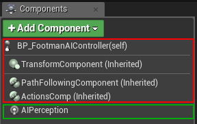
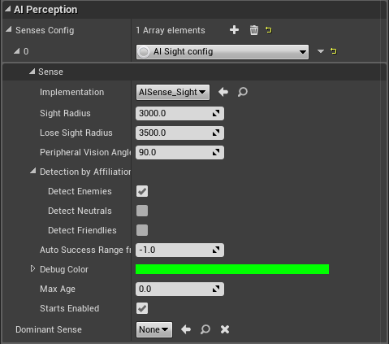
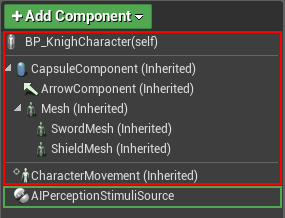
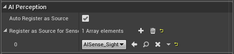
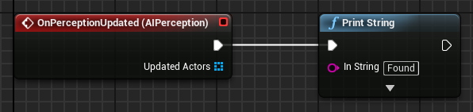
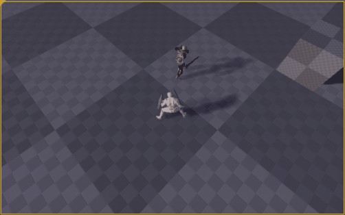
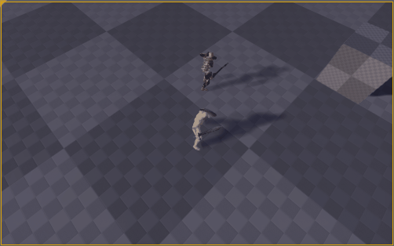

AI Perception in Unreal Engine 4
For those of you who are wondering what AI Perception is — this is a really nice system in UE4 that provides an easy way for the enemy AI in your game to track hostile/friendly/neutral characters. For example if the enemy AI sees the main character, he will attack it and so on. The AI can become aware of characters through vision, or if they hear them. There are many predefined senses.
The reason for this post is that setting up the AI Perception is very easy, but there is not much documentation yet and it was very hard for me to find a proper way to set it right.
The Setup
There are two components that we need: AIPerceptionComponent and AIPerceptionStimuliSourceComponent. The AIPerceptionComponent is the component that listens for perception stimulants (sight, hearing, etc.). The AIPerceptionStimuliSourceComponent is a stimuli source for the AIPerceptionComponent. The stimuli source stimulates the perception of the enemy AI, so that it can detect the source (our character for example).
I've seen many people add the AIPerceptionComponent to the enemy Character, but that is incorrect. It must be added to it's AI Controller.
AIPerceptionComponent Setup
We create a default AIController, and the only component we add to it is an AIPerception Component. We are going to configure it only for sight sense like so.


I left everything to the default values. As you can see it's setup only to detect enemies.
AIPerceptionStimuliSourceComponent Setup
The AIPerceptionStimuliSourceComponent must be added to any actors that we want to be stimuli sources for the AIPerceptionComponent. In our case we add it to our character.


Is it working?
Lets add an event to the EnemyAIController Blueprint to see if it's working.


Well, the “Found” message is not printed so it's not working. Well I can actually say that it works properly. The message is not being printed on screen because the enemy is not considering us as an enemy. By default all characters are neutral to each other. So how do we tell the enemy AI that the main character is actually an enemy?
Different Teams Setup
We need to place the enemy AI and our character in different teams. By default they are in a team NoTeam which is an enum value that equals to 255. Unfortunately it can't be done entirely in blueprints. We need to write some code.
In the constructor of the AEnemyAIController we set the team of the AI like so.
AEnemyAIController::AEnemyAIController(const FObjectInitializer& ObjectInitializer)
: Super(ObjectInitializer)
{
// Assign to Team 1
SetGenericTeamId(FGenericTeamId(1));
}We can't do the same with the player controller however. Here is the tricky part. A player is controlling a character that is of a certain team, the controller itself doesn't have a team.
In order to assign our character to a team he needs to implement the IGenericTeamAgentInterface interface. The AIController already implements it. Then we need to override the GetGenericTeamId function. Lets do it.
// KnightCharacter.h
UCLASS()
class THEKNIGHT_API AKnightCharacter : public ACharacter, public IGenericTeamAgentInterface
{
GENERATED_BODY()
// ...
private:
FGenericTeamId TeamId;
virtual FGenericTeamId GetGenericTeamId() const override;
// ...
};
// KnightCharacter.cpp
AKnightCharacter::AKnightCharacter(const FObjectInitializer& ObjectInitializer)
: Super(ObjectInitializer)
{
// ...
TeamId = FGenericTeamId(0);
// ...
}
FGenericTeamId AKnightCharacter::GetGenericTeamId() const
{
return TeamId;
}Now if we test it again, the enemy is considering us as an enemy and is seeing us.

The reason our character is “Found” if we exit the field of view of the enemy is that the perception is updated when we exit the sight of the enemy too.